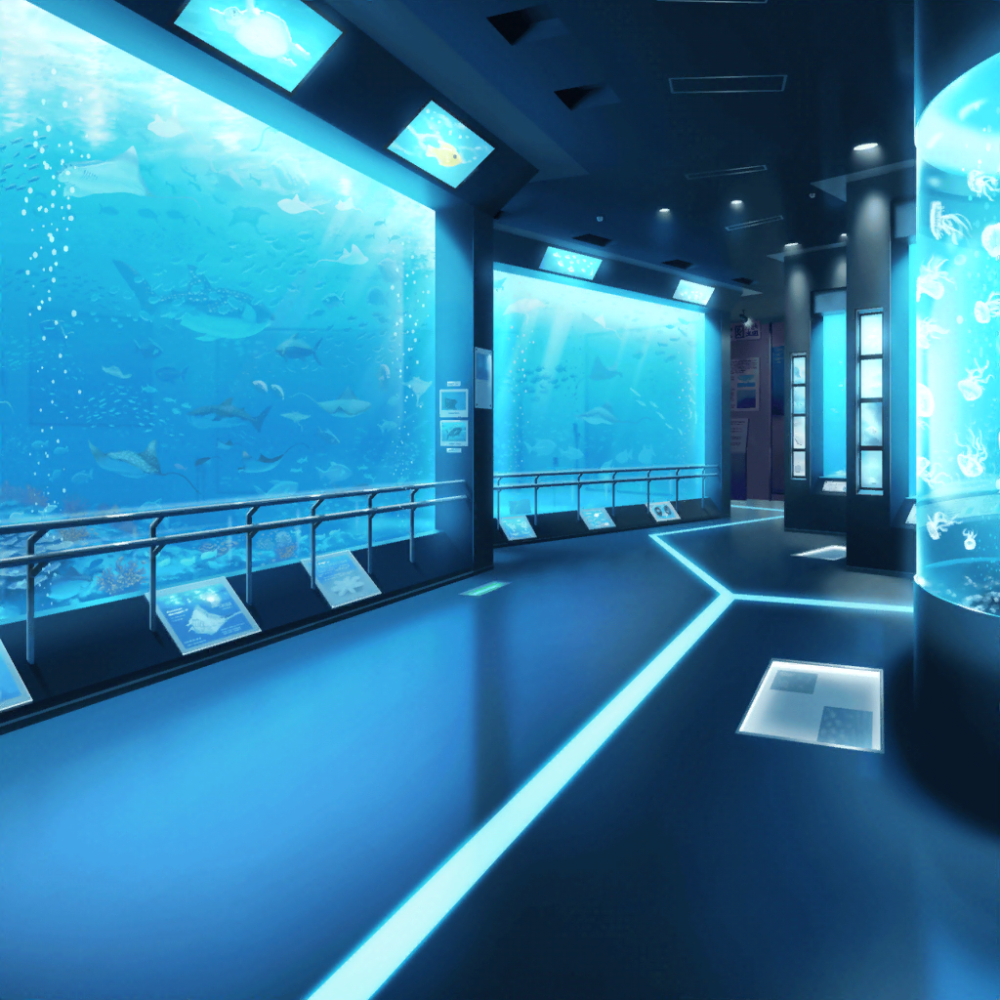

水族館 館内
花音
良かった……
ペンちゃん、なんだかみんなのところに戻れて
安心してるみたい
飼育員
うん。
ペンギンは群れで生活する動物だから、
やっぱり他のみんながいないとね
花音
私も、みんなとはぐれちゃった時は、
本当に不安だったから、その気持ちはわかるな……
美咲
花音さんとあのペンギンって、ホントよく似てますもんね。
道に迷って新幹線乗り場に行っちゃうところとか、
人前が苦手なところ、とか？
花音
……実はね、私も途中からそう思ってたんだ
花音
それじゃあ、ペンちゃん。
また来るね……
ペンギン
キュゥゥゥゥ
花音
あ、こっちに来てくれた……
子供
あ！ ねぇねぇ飼育員さん！
ペンちゃん、帰って来たの！？
飼育員
うん！
この人達が見つけてくれたんだよ！
子供
わーいっ！ お姉ちゃん達ありがとー！
良かった～、心配したんだよ～っ！
花音
ふふ。
ペンちゃんって、とっても人気者なんですね……
飼育員
今年生まれたヒナは、この子だけだから、
みんな、すっごくかわいがってくれてるんだよ
子供
ペンちゃんおかえり～っ！
ペンギン
キュゥゥゥ！
美咲
ペンちゃん、大サービスって感じですね……
飼育員
ペンちゃん……ひょっとして、人間が怖くなくなったのかも！
花音
えっ……？
飼育員
今まで、この子ってね、
人間の声が聞こえると、怯えちゃってガタガタ震えてたんだよ？
けど、今この子、全然平気だったよね……？
美咲
はい……
ていうかむしろ、声援に応えたように見えましたけど……
飼育員
だよね！？
これってきっと……あなた達のおかげだよ！
花音
わ、私達の……？
飼育員
あなた達が、この子を守ってくれたから、
人間に対する恐怖心がなくなったのかも
飼育員
私も今まで、人間に慣れさせようといろんなことを
試してみたけど結局ダメだったんだよ
花音
そ、そうだったんですか……？
飼育員
きっとあなたの優しさが、ペンちゃんにも伝わったんだね。
飼育員の私がこんなこというのもヘンだけど……
本当にありがとうね！
こころ
すごいわ、花音！
花音
こ、こころちゃん！？
はぐみ
はぐみもいるよ～！
薫
ふふ。
私がいなくてさみしかったかい、子猫ちゃん達
美咲
わー、また、ややこしい人達が……
花音
こころちゃん、はぐみちゃん、薫さん……
さっきは本当にありがとう……
おかげでペンちゃんを連れてくることができたよ……
こころ
違うわ！ お礼を言いたいのはこっちよ！
花音のおかげで、あたし達たくさんの人達を笑顔にできたもの！
こころ
それに、花音はそのペンギンさんを
笑顔にしたじゃない！
本当にすごいわ！
花音
……ペンちゃんを……笑顔に？
こころ
そうよ！
世界中を笑顔にするってことは、
もちろんペンギンさんだって笑顔にならないとダメだわ！
こころ
それがわかっているなんて、さすが花音ね！
花音
……そっか。
そうだよね……私だってハロハピの一員だもん
はぐみ
ねねっ！ かのちゃん先輩、見てみて！
ペンちゃんのことを待ってたお客さんの顔……
はぐみ
みんな、笑顔だよっ！
花音
う、うん！
そうだね！
こころ
それじゃあ、みんながもっと笑顔になれるように
ここで演奏をするわよ！
はぐみ
わわっ！ こころん、ナイスアイディア！
はぐみ、さんせーいっ！
薫
こころ……君のアイディアは無限大だね
飼育員
あ、ちょ、ちょっと待ってっ！
ここで演奏は……ちょっとダメなんで。
ペンギン達、ビックリしちゃうから……
ペンギン
キュ、キュゥゥゥ！
花音
……み、美咲ちゃん。
なんか色々迷惑かけちゃったよね。
本当にごめんね
美咲
花音さん、謝りすぎ。
さっきも言いましたけど、
全然迷惑だなんて思ってないですって
美咲
それにしても今日の花音さん、すごかったですよ
花音
ぜ、全然すごくないよ！
なんか必死でやったら、こうなっちゃっただけだもん……
美咲
いやいや。その一生懸命なところ？
それがすごかったですよ
花音
けど、なんか嬉しかったな。
私にだって、誰かを笑顔にできるんだって……
ちょっとだけ自信が出た、かも……
美咲
しかも相手が、ペンギンですからね。
難易度高いですもん
花音
ふふ。
もう１回ペンちゃん……抱っこしたいな～
花音
……あ、そうだ！
美咲
どうしました？
花音
羊毛フェルト！
今度はペンギンさんを作ってみようかな！
花音
今日１日、ずっと一緒にいたから、
細かいところまでちゃんと作れると思うんだ！
美咲
あー、それ、いいですね
花音
そ、そうしたら、材料を買っていきたいんだけど……
……こっち？
美咲
……真逆ですね
美咲
はは……
……それじゃあみんなで一緒に行きましょうか？
花音
うん！
花音
バイバイ、ペンちゃん……